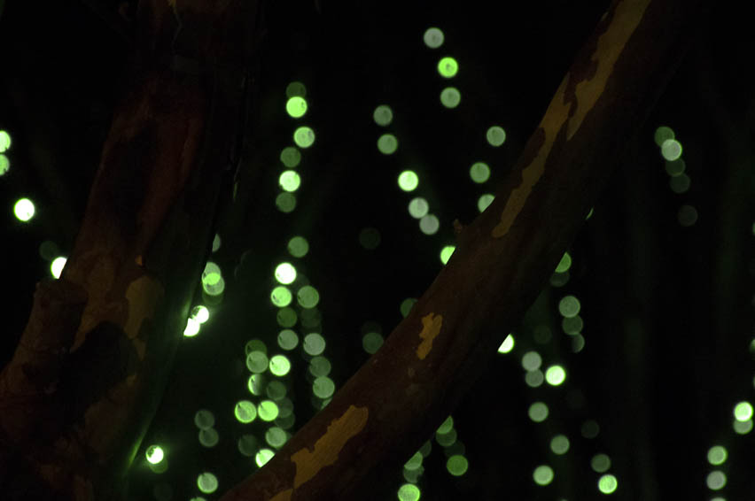

Time
Light
Photography, Photoshop
1080x580
In this Photo, I wanted to play with lights in general, and the light that can be found even in darkness. At this time in the semester, I was feeling a little hopeful, I finished all my work, and I was on a little vacation trip, so i had no reason to be down. That being said, before the trip I was a little emotional, and in somewhat of a dark place. so the light can represent the trip and the darkness can represent my previous emotions. I wanted to express the feeling of hopefulness, because wherever you go, and whenever you fel down and in the dark, there is always a light there that can guide you.